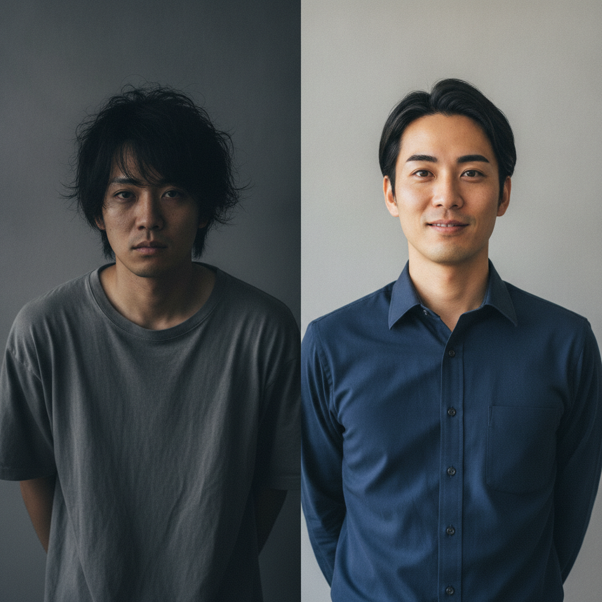

MOTE LAB
「いい人なんだけど」で終わる理由を、誰もあなたに言ってくれない。
MOTE LABは、それを数字で言う。
あなたに当てはまる？
初回デートのあと、返信が遅くなって自然消滅する
会話が面接みたいになる。何を話せばいいか、毎回考えすぎる
「友達としては最高」と言われる。褒めてるのか断ってるのかわからない
何を直せばいいか、具体的に言われたことが一度もない
「清潔感を磨こう」と言われても、何をどうすればいいかわからない
正直、これは努力が足りない話じゃないと思う。
努力はしている。でも、どこに向かって努力すればいいかが、誰にも教えてもらえていない。
The Real Problem
本を読んだ。YouTubeも見た。「清潔感が大事」「聞き上手になろう」「自信を持て」—— 全部正しいことが書いてある。だから何も変わらなかった。
それは一般論だからだ。「あなたの場合、どこが具体的に減点されているか」は、 どの本にも動画にも書いていない。書けるはずがない。あなたのことを見ていないから。
自己流の努力が空回りするのは、当然だ。 正しい課題を知らないまま動いているんだから。
変わるために必要なのは、
「自分の現在地を正確に知ること」、それだけだ。
MOTE Score System
「なんとなくモテない」を終わらせる唯一の方法は、数値化だ。 外見・会話・態度・空間づくり—— すべてを観察可能な59の行動に落とし込んでいる。
両面スコアカードは、あなたの自己採点と女性トレーナーの採点を同じカードに並べる。 そのズレが「伸びしろ」だ。 ここに初めて、具体的に動ける課題が生まれる。
MOTEスコア — 診断結果
M0 フル診断
Before / After
スコアが変わる前に、行動が変わる。行動が変わる前に、「直す場所がわかる」が変わる。

最初の診断で、自分が思っていた点と女性の採点が 一番ズレてたのは「清潔感」だった。ショックだった。 でも、直す場所がわかれば、あとはやるだけだった。
K.Tさん・27歳・IT営業 / 3ヶ月でスコア54→76
Voices
「俺、清潔感だけはあると思ってた」が、一番の減点項目だった。 トレーナーに数字で見せられて、初めてちゃんと向き合えた。 直したら初回デートの空気が明らかに変わった。
会話の沈黙が怖くて、ずっと埋めようとしてた。 「沈黙はマイナスじゃない」をトレーナーの採点で確認できたのがでかい。 それだけで、変に力まなくなった。
彼女いない歴＝年齢でした。 半年で、人生で初めて「また会いたい」と言われた。 正直、自分でもびっくりした。
※ 写真・体験談はプログラム設計に基づくモデルケースです。個人の結果は異なります。
Program
知識を入れるだけのプログラムじゃない。 現実の行動が変わるまで、5つの手段を組み合わせて使う。
処方 01
「なぜそのスコアになったか」をトレーナーが言語化して返す。 ここが他のサービスにない核心だ。採点結果を受け取るだけでなく、 「どの行動を、どう変えるか」まで一緒に考える。 最初はリモート動画採点から。いきなり対面はない。
処方 05
頭で理解しても、体が反応しなければ意味がない。 月1回の実地セッションと合宿で、知識を「動けるスキル」に変換する。 実際の場面を再現した環境で、フィードバックループを回す。
処方 02
59項目の採点軸に対応した解説動画を自分のペースで視聴。 「何が評価されているか」を理解してから動く。
処方 03
日常の中で行動記録をつけ、セッションまでに「気づき」を言語化する。 書くことで、変化を自覚できる。
処方 04
毎月スコアを再測定して伸びを確認。 停滞していれば原因を特定して処方を変える。 感覚頼みで進まない。
Journey
MOTEスコア
無料診断
まず現在地を知る。診断だけで終わってもいい
プログラム
スタート
料金・スケジュール確認後に開始
フル診断
59項目
自己採点＋トレーナー採点を同時実施
教材・FB・
実地セッション
月次スコア更新。処方を都度調整
卒業
Before/After
数字で変化を確認して卒業
いつでも辞められるプログラムだ。 卒業が目的なので、目標を達成したら終わりにしていい。 1ヶ月でも3ヶ月でも、スコアが動いた時点で成果だ。
FAQ
正直、怪しく見えると思う。だからこそ仕組みを全部公開している。 採点は複数の女性トレーナーによる独立評価で集計し、特定個人との関係性が生まれる設計にはなっていない。 運営はすべて株式会社MoteLab（設立準備中）が管理する。 契約の線引きも明確で、セッション外での連絡・個人的な交流は禁止している。 「透明性がある怪しさ」が気になるなら、まず無料診断だけ受けてみてほしい。
大丈夫だ。最初はリモートの動画採点から始まる。いきなり対面はない。 自分の日常行動を動画に撮ってトレーナーに送るところから始まるので、 「女性の前で緊張する」という状況は最初にはない。 徐々に実地のセッションに移行する設計になっている。
変われる。59項目のうち顔の造形は1項目もない。 MOTE LABが測っているのは、すべて「行動」だ。 清潔感、表情、会話のリズム、空間の使い方——これらはすべて後から身につく。 顔の話をしたいなら、別のサービスを選んでほしい。ここは違う。
無料診断のあとに案内している。診断だけで終わってもいい。 料金を先に知りたい気持ちはわかるが、スコアを見てから判断してほしいのが正直なところだ。 あなたの現在地とプログラムの内容が合わなければ、入会を勧めない。
いつでも辞められる。むしろ、そのために参加してほしい。 このプログラムの目的は「卒業」だ。 関係性を作るのはあなただし、MOTE LABはそこに関与しない。 スコアが変わって、自分で動けるようになったら、卒業していい。
Free Diagnosis
まず、現在地を知ることだ。無料診断は15分で終わる。
診断だけで終わってもいい。でも知った後は、動ける。
クレジットカード不要・無料で診断が完了します
Contact
「まだ診断に踏み切れない」「まず話を聞きたい」——そういう気持ち、全然おかしくない。
気軽に送ってほしい。返信は必ずする。
すぐに話したいなら、LINEの方が早い。
公式LINEで話す